Enviar horários
Como marcar as reuniões da semana sem ficar perguntando um por um.
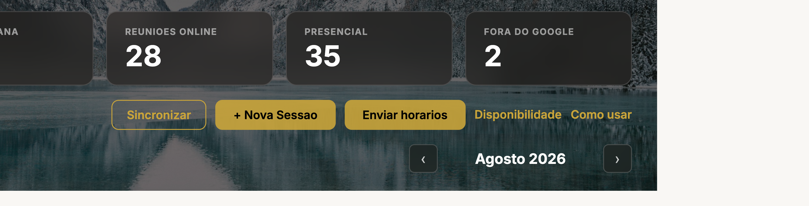
1. Antes de tudo: seus horários
Isso define TODOS os horários que qualquer cliente vai ver. Configure uma vez e pode esquecer.
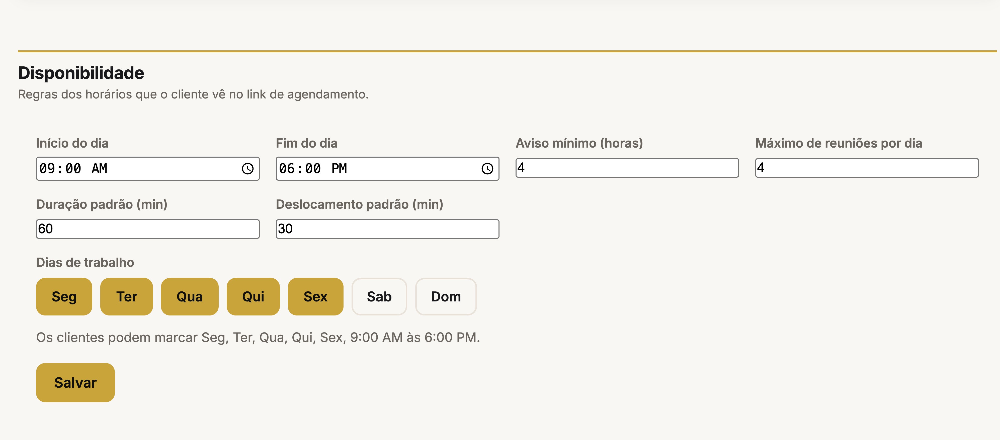
- Abra Configurações e vá na aba Disponibilidade.
- Marque os dias da semana em que o Pastor Rafael atende.
- Escolha o horário de início e de fim do dia.
- Aviso mínimo: quanto tempo antes o cliente ainda pode marcar. Ex.: 4 horas.
- Máximo por dia: quantas reuniões cabem em um dia.
- Clique em salvar.
2. Enviar horários para um cliente
É isso que substitui a conversa de sexta-feira, cliente por cliente.
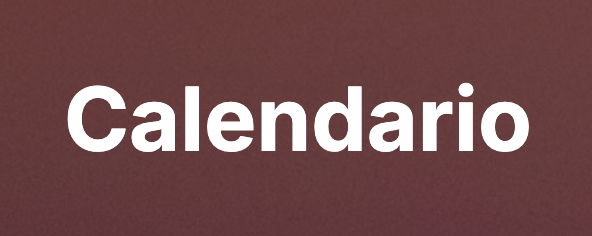
- Abra o Calendário.
- Clique em Enviar horários, no canto superior direito.
- Escolha o cliente na lista. Os clientes ativos aparecem primeiro.
- Escolha Google Meet ou Presencial.
- Se for presencial, coloque o endereço e o tempo de deslocamento.
- Clique em Criar link.
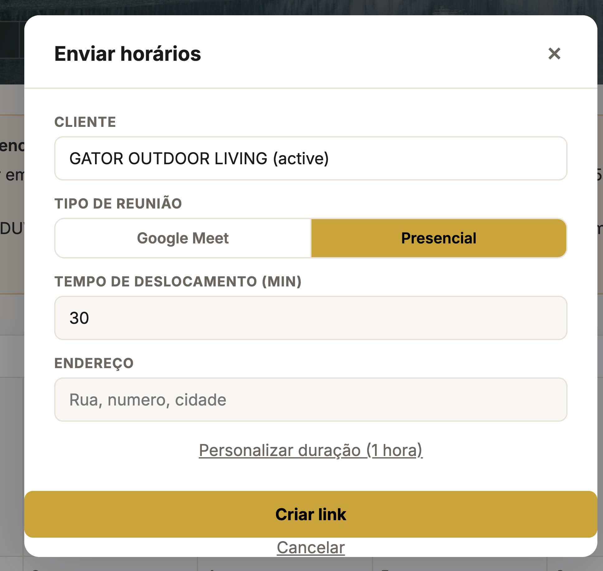
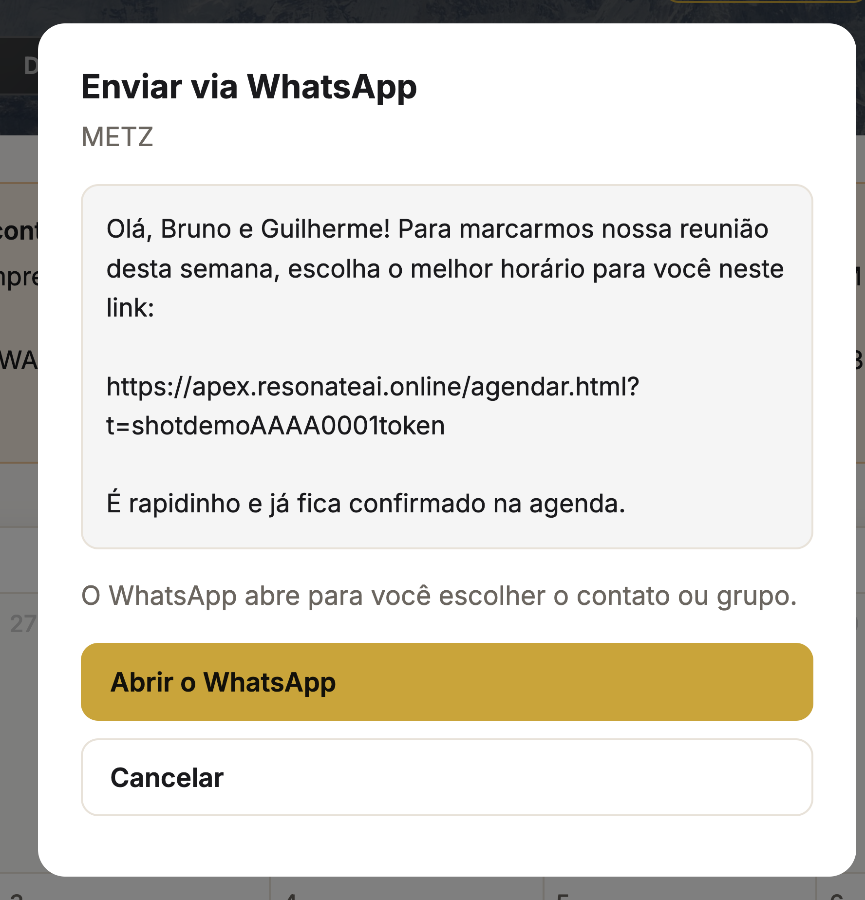
3. A lista de quem ainda não respondeu
Depois de criar o link, o cliente entra numa lista embaixo do calendário.
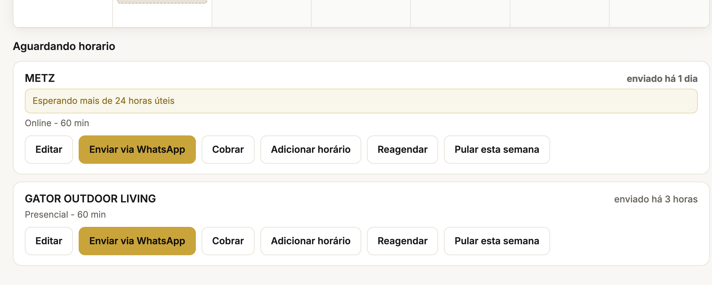
Cada linha mostra o nome do cliente e há quanto tempo você está esperando. Quanto mais tempo passa, mais forte fica o texto.
| Enviar no WhatsApp | Abre o WhatsApp com a mensagem pronta. Você escolhe a pessoa ou o grupo. |
| Cobrar | Manda uma segunda mensagem, mais leve, com o mesmo link. |
| Editar | Muda os dados da reunião antes de o cliente escolher. |
| Adicionar horário | Se o cliente mandar um horário direto no WhatsApp, você coloca na mão. |
| Novo link | Gera um link novo. |
| Pular a semana | Quando não vai ter reunião. Pergunta antes de confirmar. |
4. O que o cliente vê
Ele abre o link no celular e escolhe em duas telas. Nada de aplicativo, nada de senha.
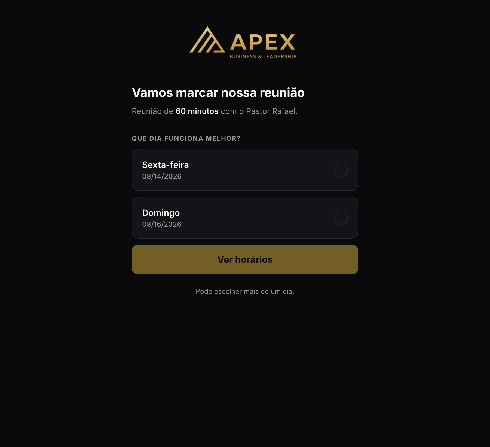
Primeiro o dia. Ele pode marcar mais de um.
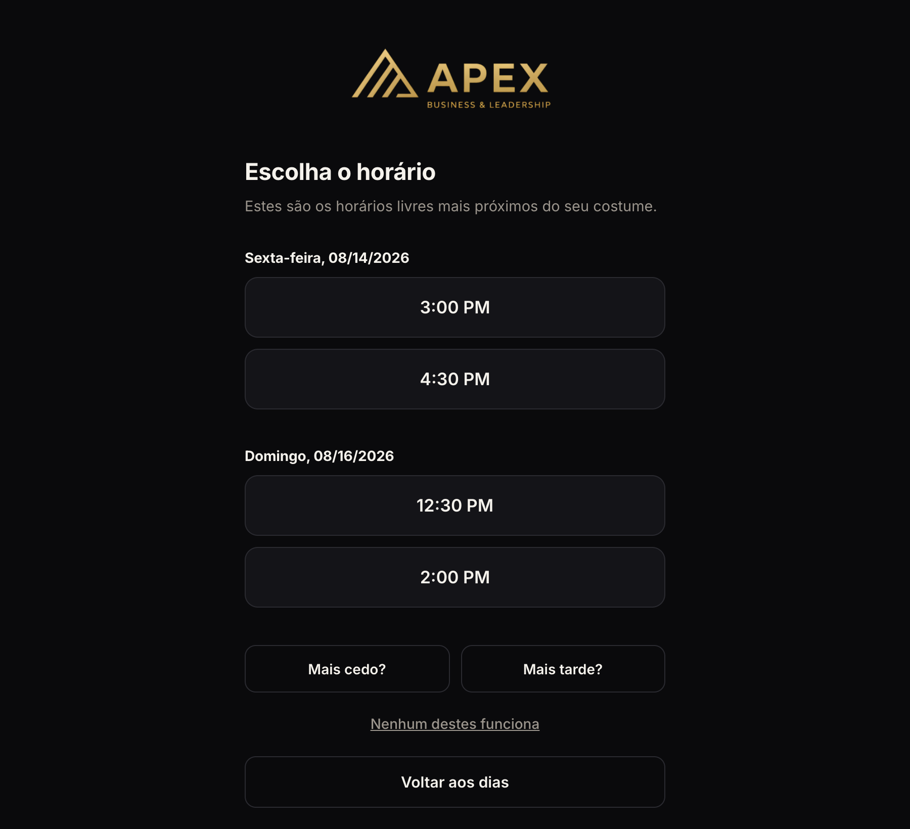
Depois o horário. Aparecem poucas opções, nos horários que ele costuma marcar. Se não servir, ele tem Mais cedo?, Mais tarde? e Nenhum destes funciona — esse último avisa você.
5. Quando ele escolhe o horário
A partir daqui é tudo automático.
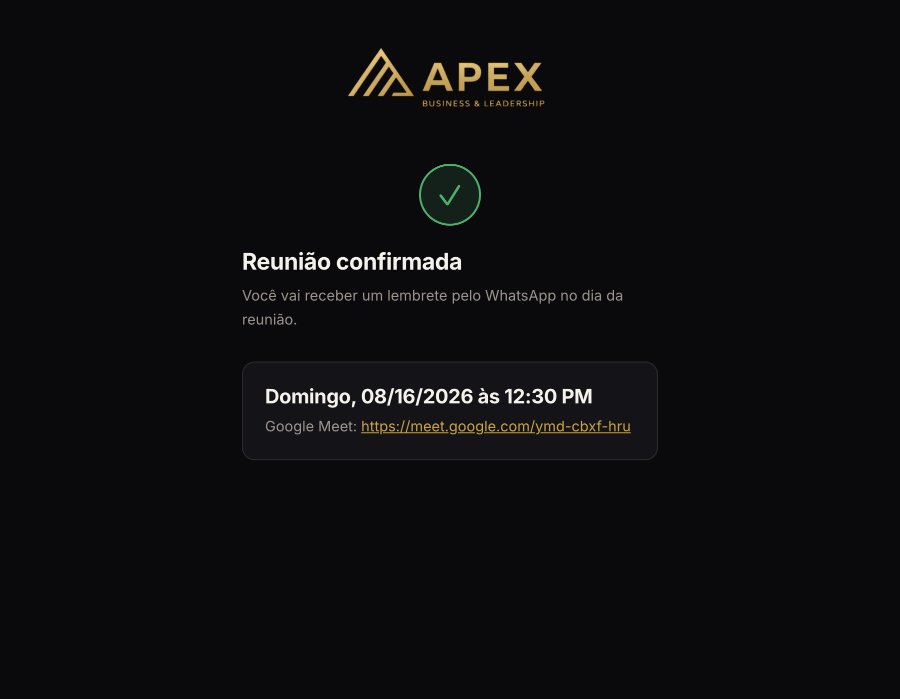
- A reunião entra na agenda do Pastor Rafael na hora.
- Se for online, o link do Google Meet é criado sozinho.
- Na sua lista, o cliente sai de cima e fica marcado como resolvido.
- O cliente passa a ver a reunião no portal dele.
6. Cobrar quem não respondeu
Sem refazer nada e sem parecer cobrança.
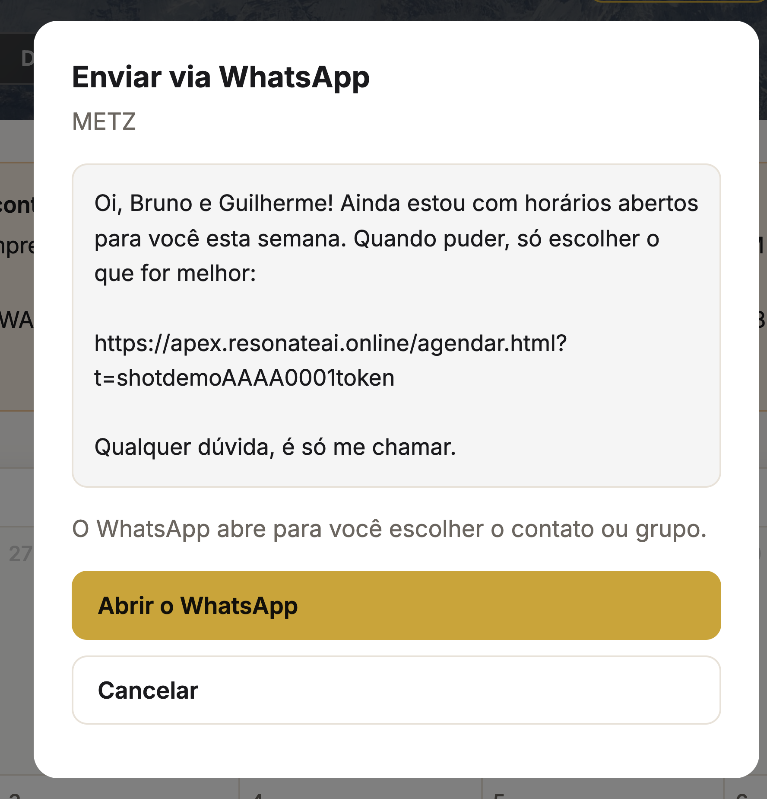
- Na lista, clique em Cobrar.
- A mensagem é outra, mais leve, e usa o mesmo link — o que você já mandou continua valendo.
- Clique em Abrir WhatsApp e escolha a pessoa ou o grupo.
7. Remarcar, pular a semana e horário na mão
Os casos que fogem do normal.
O cliente quer remarcar. Ele mesmo remarca pelo portal, sem passar por você. Se ele pedir no WhatsApp, use Novo link.
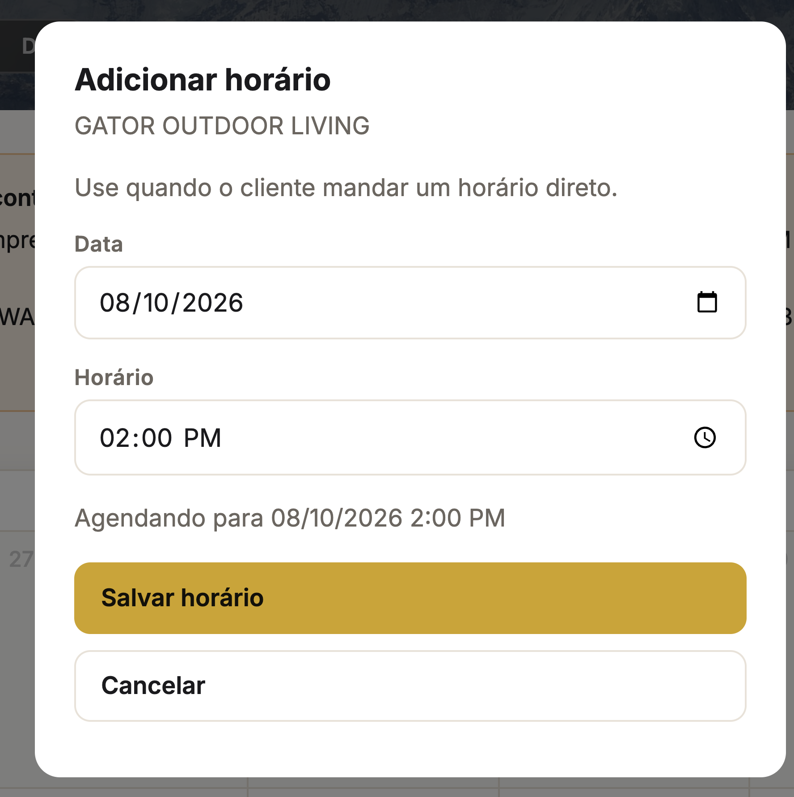
Ele mandou o horário no WhatsApp. Use Adicionar horário, escolha a data e a hora, e salve. Vale até para um horário fora dos que você ofereceu.
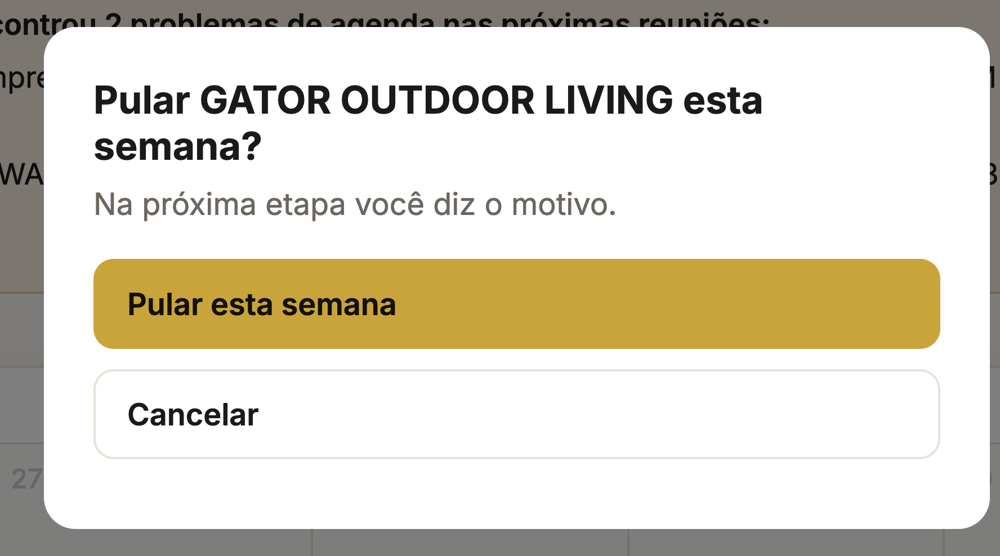
Não vai ter reunião essa semana. Use Pular a semana e diga o motivo. O sistema pergunta antes de confirmar, para você não clicar sem querer.
↑ voltar ao índice8. O que ele vê dentro do portal
O cliente não precisa procurar o link. Ele aparece na primeira tela quando ele entra.
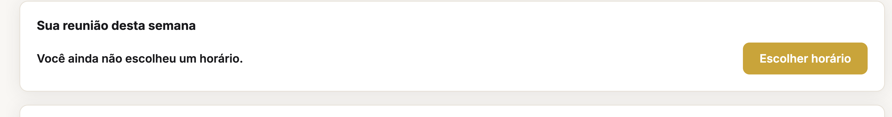
Depois que ele escolhe, o mesmo card mostra o dia e a hora. Perto da reunião, aparece também o botão de entrar.
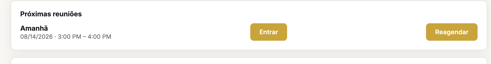